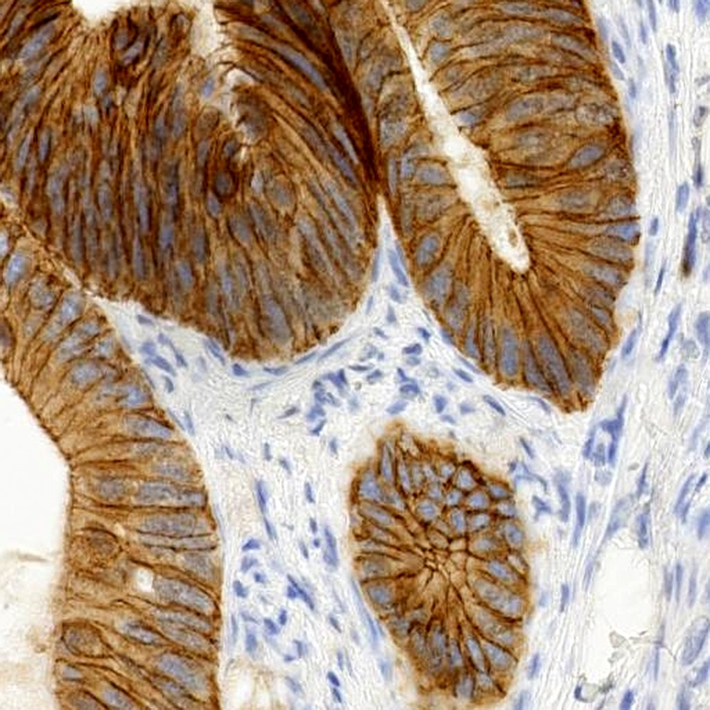
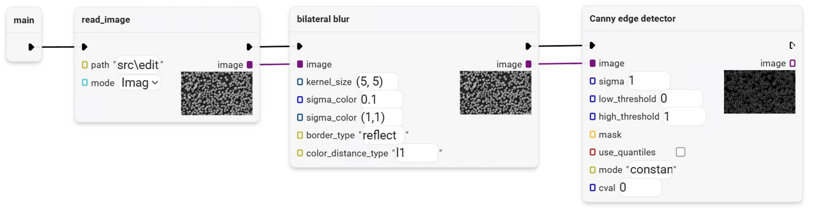
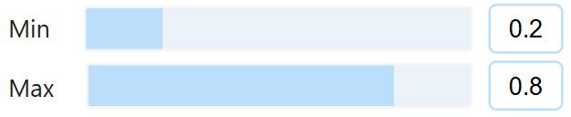
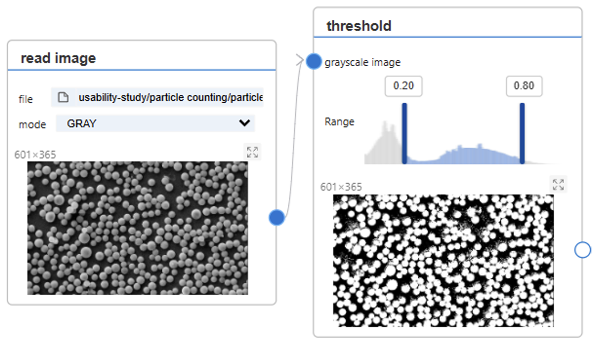
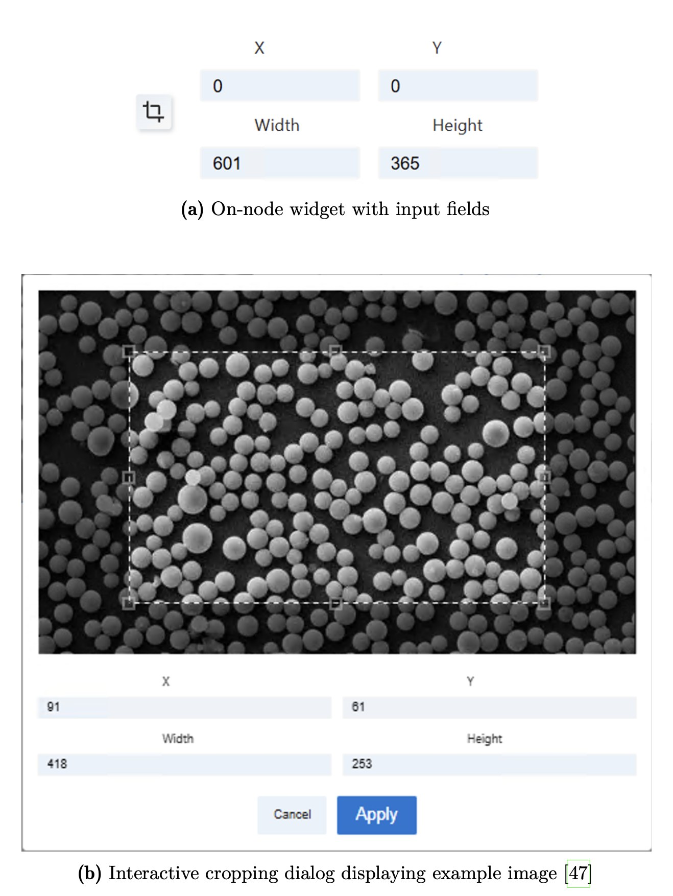
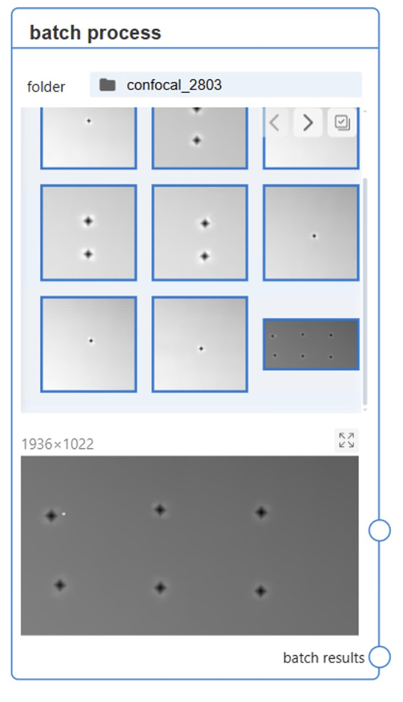
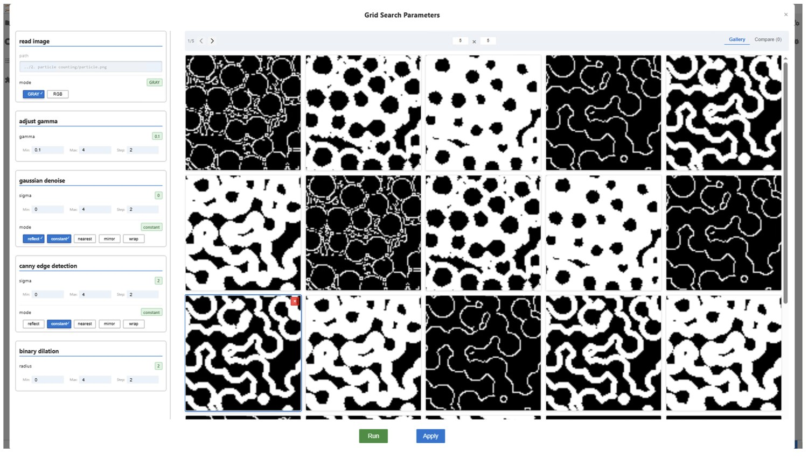

Drag the threshold node
CHALDENE
Closing the feedback loop in scientific image processing
Where, how long, with whom.
A biologist. Not a programmer.

I can see when a segmentation is right. I just can't code my way there.
First, become a programmer.
Before a single cell is counted: set up an environment, learn the libraries, write the code.
Libraries she has to learn first$ conda create -n imaging python=3.10 $ pip install numpy scikit-image opencv-python import numpy as np from skimage import io, filters, measure img = io.imread("cells_0421.tif") gray = img.mean(axis=2) t = filters.threshold_otsu(gray) binary = gray > t # is this right? run again… cells = measure.label(binary)
…but not the seeing.
- Parameters = text fields. Which number is right?
- Previews: tiny and static.
- Comparing: memory, or external tools.

Not to program.
To experiment.
Loop broken — you change a value and see nothing
Five goals guarded every decision
- 01Direct interactionGrab and drag — don't type numbers
- 02Less to rememberThe system keeps track, not the human
- 03Instant visual feedbackEvery change visible immediately
- 04Comparison that jumps outDifferences hit the eye
- 05Speed that keeps upStuttering feedback helps no one
Touch the parameters.



Every node, one view.
Zoom in one node — all nodes follow. The same cell, at every step, at the same time.
Make the change visible.
The difference map highlights exactly the pixels an operation changed — right inside the node. What did this step do? One glance.
Nobody analyses one image.
Research means series — often hundreds. One interface to select and manage whole collections.

They asked for a tree.
They needed a gallery.
The wish: collapsible results for parameter search. I took it seriously — not literally.

More previews —
zero waiting.
The heavy maths runs on the server, but the picture is drawn on your own screen — so zooming and panning never wait for anything. And every preview travels bundled into a single message. That part is a trade:
One less wait for every preview — and a pipeline is full of previews
The loop is closed.
Type. Run. Guess. Remember.
Tune visually. Inspect in place. Compare side by side.
Plus an extended node spec: new widgets integrate easily. The system grows — without me.
The feedback loop is the product.
Users forgive a missing feature. They don't forgive a system that shows them nothing.
And design goals beat clever ideas — five of them kept me from arbitrary decisions.
Measure it —
not just ship it.
My feedback was fast but informal. Next time I measure before and after — task times, most obviously — so I can show not just that it got better, but by how much.